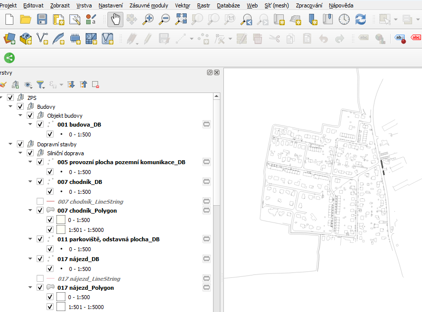

Instalace z QGIS Plugin repozitáře
Spusťte QGIS a klikněte na menu “Zásuvné moduly” -> “Správa a instalace Zásuvných modulů …”:  V otevřeném dialogovém okně přejděte do záložky “Not installed”. Napište klíčové slovo “DTM” a stiskněte Enter. Zobrazí se jeden nalezený plugin s názvem JVF DTM Plugin. V dalším kroku klikněte na tlačítko “Instalovat zásuvný modul” v pravém dolním rohu.
V otevřeném dialogovém okně přejděte do záložky “Not installed”. Napište klíčové slovo “DTM” a stiskněte Enter. Zobrazí se jeden nalezený plugin s názvem JVF DTM Plugin. V dalším kroku klikněte na tlačítko “Instalovat zásuvný modul” v pravém dolním rohu.
Instalace z GitHubu (pro testování jiných verzí pluginu)
Plugin si nejprve stáhněte z GitHubu jako ZIP soubor. Dále spusťte QGIS a klikněte na menu “Zásuvné moduly” -> “Správa a instalace Zásuvných modulů …”. V otevřeném dialogovém okně přejděte do záložky “Instalovat ze ZIPu”. Najděte ZIP soubor s pluginem a klikněte na “Instalovat zásuvný modul”.
Jak plugin použít?
Klikněte na ikonku  .
.
Pokud tuto ikonku nevidíte, klikněte na menu “Zobrazit” -> “Nástrojové lišty” a zatrhněte “Panel nástrojů Zásuvné moduly”: 
Po kliknutí na ikonku na Vás vyskočí dialogové okno pro výběr souboru: 
Otevřete požadovaný JVF soubor a vyčkejte až se načte. Výsledek může vypadat například takto: 
Pokud chcete vidět atributy konkrétního objektu, klikněte na tuto ikonu:  a vyberte vrstvu nebo skupinu, která Vás zajímá:
a vyberte vrstvu nebo skupinu, která Vás zajímá:  .
.
Vybraný objekt (objekty) se zvýrazní červeně a vyskočí na Vás následující panel “Identifikovat výsledky” se seznamem atributů objektu (objektů):  .
.
Logika stylování
Nejjednodušší případ
<objtyp:ProvozniPlochaPozemniKomunikaceDefinicniBod>
<pokdef:ObjektovyTypNazev code_base="0100000005" code_suffix="04">provozní plocha pozemní komunikace</pokdef:ObjektovyTypNazev>
<pokdef:KategorieObjektu>Dopravní stavby</pokdef:KategorieObjektu>
<pokdef:SkupinaObjektu>Silniční doprava</pokdef:SkupinaObjektu>
<pokdef:ObsahovaCast>ZPS</pokdef:ObsahovaCast>
<pokdef:ZaznamyObjektu>
<ZaznamObjektu xmlns="pokdef">
<ZapisObjektu xmlns="cmn">r</ZapisObjektu>
<AtributyObjektu>
<SpolecneAtributyVsechObjektu xmlns="atr">
<DatumVkladu>2024-02-22T06:50:47</DatumVkladu>
<DatumZmeny>0001-01-01T00:00:00</DatumZmeny>
<ID>80000120001292394</ID>
<IDEditora>SUBJ-00004246</IDEditora>
<IDZmeny>CZ080-880009</IDZmeny>
<PopisObjektu/>
<VkladOsoba>Eva Knopová</VkladOsoba>
<ZmenaOsoba/>
</SpolecneAtributyVsechObjektu>
<SpolecneAtributyObjektuDefinicnichBodu xmlns="atr">
<ICS/>
<UrovenUmisteniObjektuZPS>0</UrovenUmisteniObjektuZPS>
</SpolecneAtributyObjektuDefinicnichBodu>
<TypPozemniKomunikace xmlns="atr">1</TypPozemniKomunikace>
<PrevazujiciPovrch xmlns="atr">99</PrevazujiciPovrch>
</AtributyObjektu>
<GeometrieObjektu>
<gml:pointProperty xmlns:gml="http://www.opengis.net/gml/3.2">
<gml:Point gml:id="ID80000120001292394_04" srsDimension="3" srsName="EPSG:5514">
<gml:pos>-498189.97 -1087404.68 0.00</gml:pos>
</gml:Point>
</gml:pointProperty>
</GeometrieObjektu>
</ZaznamObjektu>
<ZaznamObjektu xmlns="pokdef">
<ZapisObjektu xmlns="cmn">r</ZapisObjektu>
<AtributyObjektu>
<SpolecneAtributyVsechObjektu xmlns="atr">
<DatumVkladu>2024-02-22T06:50:47</DatumVkladu>
<DatumZmeny>0001-01-01T00:00:00</DatumZmeny>
<ID>80000120001295705</ID>
<IDEditora>SUBJ-00004246</IDEditora>
<IDZmeny>CZ080-880009</IDZmeny>
<PopisObjektu/>
<VkladOsoba>Eva Knopová</VkladOsoba>
<ZmenaOsoba/>
</SpolecneAtributyVsechObjektu>
<SpolecneAtributyObjektuDefinicnichBodu xmlns="atr">
<ICS/>
<UrovenUmisteniObjektuZPS>0</UrovenUmisteniObjektuZPS>
</SpolecneAtributyObjektuDefinicnichBodu>
<TypPozemniKomunikace xmlns="atr">1</TypPozemniKomunikace>
<PrevazujiciPovrch xmlns="atr">99</PrevazujiciPovrch>
</AtributyObjektu>
<GeometrieObjektu>
<gml:pointProperty xmlns:gml="http://www.opengis.net/gml/3.2">
<gml:Point gml:id="ID80000120001295705_04" srsDimension="3" srsName="EPSG:5514">
<gml:pos>-498352.50 -1087468.52 0.00</gml:pos>
</gml:Point>
</gml:pointProperty>
</GeometrieObjektu>
</ZaznamObjektu>
</pokdef:ZaznamyObjektu>
</objtyp:ProvozniPlochaPozemniKomunikaceDefinicniBod>
Touto položkou skriptu
self.type_mapping_df = self.load_type_mapping()
se načte soubor načte se soubor typy_druhy.csv – ukázka:
162 plot|DruhPlotu
166 schodiště|DruhSchodiste
168 zeď|TypZdi
Znamená to, že objekt 162 plot je z hlediska stylů charakterizován atributem DruhPlotu (drátěný atd.).
Vzhledem k tomu, že ve výše uvedeném nodu je
005 provozní plocha pozemní komunikace
Dojde k hledání v tomto souboru a vyhodnotí se to tak, že z hlediska stylů nemá charakteristický atribut (atributy) a základ klíče pro vyhledání stylu je tudíž jen
005 provozní plocha pozemní komunikace
bez další charakteristiky
Klíč se doplní ještě o geometrii vrstvy, tady Point a v cyklu bude postupně hledáno ve stylech pro všechna měřítka s těmito klíči:
005 provozní plocha pozemní komunikace_Point_500
005 provozní plocha pozemní komunikace_Point_5000
005 provozní plocha pozemní komunikace_Point_10000
005 provozní plocha pozemní komunikace_Point_25000
Matchne se jenom 500.
Tady ukážu na složitějším nodu, jak je to, když má objekt charakteristický atribut z hlediska stylů:
<objtyp:Plot>
<plotli:ObjektovyTypNazev code_base="0100000162" code_suffix="02">plot</plotli:ObjektovyTypNazev>
<plotli:KategorieObjektu>Součásti a příslušenství staveb</plotli:KategorieObjektu>
<plotli:SkupinaObjektu>Stavba společná pro více skupin</plotli:SkupinaObjektu>
<plotli:ObsahovaCast>ZPS</plotli:ObsahovaCast>
<plotli:ZaznamyObjektu>
<ZaznamObjektu xmlns="plotli">
<ZapisObjektu xmlns="cmn">r</ZapisObjektu>
<AtributyObjektu>
<SpolecneAtributyVsechObjektu xmlns="atr">
<DatumVkladu>2024-10-10T13:31:55</DatumVkladu>
<DatumZmeny>2024-10-10T13:31:55</DatumZmeny>
<ID>80000050005336157</ID>
<IDEditora>SUBJ-00004246</IDEditora>
<IDZmeny>PGAD-F5E6C776-D82A-4265-906C-B10D5E46F561</IDZmeny>
<PopisObjektu/>
<VkladOsoba>dummy</VkladOsoba>
<ZmenaOsoba/>
</SpolecneAtributyVsechObjektu>
<SpolecneAtributyObjektuZPS xmlns="atr">
<ICS/>
<TridaPresnostiPoloha>4</TridaPresnostiPoloha>
<TridaPresnostiVyska>4</TridaPresnostiVyska>
<UrovenUmisteniObjektuZPS>0</UrovenUmisteniObjektuZPS>
<ZpusobPorizeniZPS>99</ZpusobPorizeniZPS>
</SpolecneAtributyObjektuZPS>
<DruhPlotu xmlns="atr">2</DruhPlotu>
<HraniceJinehoObjektu xmlns="atr">0</HraniceJinehoObjektu>
</AtributyObjektu>
<GeometrieObjektu>
<gml:curveProperty xmlns:gml="http://www.opengis.net/gml/3.2">
<gml:LineString gml:id="ID80000050005336157_02" srsDimension="3" srsName="EPSG:5514">
<gml:posList>-498192.54 -1087425.46 278.72 -498179.66 -1087491.41 276.93 -498178.66 -1087500.00 276.52 -498173.33 -1087546.06 274.79 -498170.78 -1087585.64 273.23 -498168.76 -1087618.90 271.65 -498166.84 -1087641.67 270.10 -498166.71 -1087641.75 270.10</gml:posList>
</gml:LineString>
</gml:curveProperty>
</GeometrieObjektu>
</ZaznamObjektu>
…
Zde je v souboru typy_druhy.csv dohledán
162 plot|DruhPlotu
V konkrétním případě je to 2, k tomu se dohledá v /xsd/common/atributy.xsd název, což je „drátěný“ a základ klíče pro vyhledání stylu je tudíž
162 plot - drátěný
Klíč se doplní ještě o geometrii vrstvy, tady LineString a v cyklu bude postupně hledáno ve stylech pro všechna měřítka s těmito klíči:
162 plot - drátěný_LineString_500
162 plot - drátěný_LineString_5000
162 plot - drátěný_LineString_10000
162 plot - drátěný_LineString_25000
V prvních dvou případech se to matchne.
Další případ:
<objtyp:TechnologickyObjektPlynovodniSiteBod>
<topbod:ObjektovyTypNazev code_base="0100000112" code_suffix="01">technologický objekt plynovodní sítě</topbod:ObjektovyTypNazev>
<topbod:KategorieObjektu>Stavby technické infrastruktury</topbod:KategorieObjektu>
<topbod:SkupinaObjektu>Plynovod</topbod:SkupinaObjektu>
<topbod:ObsahovaCast>TI</topbod:ObsahovaCast>
<topbod:ZaznamyObjektu>
<topbod:ZaznamObjektu>
<cmn:ZapisObjektu>r</cmn:ZapisObjektu>
<topbod:AtributyObjektu>
<atr:SpolecneAtributyVsechObjektu>
<atr:ID>00000100050601033</atr:ID>
<atr:IDZmeny/>
<atr:PopisObjektu>regulační stanice plynu</atr:PopisObjektu>
<atr:IDEditora>SUBJ-00000100</atr:IDEditora>
<atr:DatumVkladu>2024-10-01T00:00:00</atr:DatumVkladu>
<atr:VkladOsoba>SYSTEM</atr:VkladOsoba>
<atr:DatumZmeny>2024-08-08T14:25:35</atr:DatumZmeny>
<atr:ZmenaOsoba>SYSTEM</atr:ZmenaOsoba>
</atr:SpolecneAtributyVsechObjektu>
<atr:SpolecneAtributyObjektuTI>
<atr:IDVlastnika>SUBJ-00008241</atr:IDVlastnika>
<atr:IDSpravce>SUBJ-00008241</atr:IDSpravce>
<atr:IDExterni>5000298541</atr:IDExterni>
<atr:NeuplnaData>true</atr:NeuplnaData>
<atr:UrovenUmisteniObjektuTI>0</atr:UrovenUmisteniObjektuTI>
<atr:TridaPresnostiPoloha>9</atr:TridaPresnostiPoloha>
<atr:TridaPresnostiVyska>9</atr:TridaPresnostiVyska>
<atr:ZpusobPorizeniTI>6</atr:ZpusobPorizeniTI>
</atr:SpolecneAtributyObjektuTI>
<atr:StavObjektu>0</atr:StavObjektu>
<atr:TlakovaHladinaPlynovodniSite>99</atr:TlakovaHladinaPlynovodniSite>
<atr:TypTechnologickehoObjektuPlynovodniSite>2</atr:TypTechnologickehoObjektuPlynovodniSite>
</topbod:AtributyObjektu>
<topbod:GeometrieObjektu>
<gml:pointProperty xlink:type="simple">
<gml:Point srsName="EPSG:5514" srsDimension="3" gml:id="ID100050601033_01">
<gml:pos>-738172.22 -1042152.65 0.0</gml:pos>
</gml:Point>
</gml:pointProperty>
</topbod:GeometrieObjektu>
</topbod:ZaznamObjektu>
</topbod:ZaznamyObjektu>
</objtyp:TechnologickyObjektPlynovodniSiteBod>
Zde je v souboru typy_druhy.csv dohledán
112 technologický objekt plynovodní sítě|TlakovaHladinaPlynovodniSite
V konkrétním případě je to 99, k tomu se dohledá v /xsd/common/atributy.xsd název, což je „nezjištěno/neurčeno“ a základ klíče pro vyhledání stylu je tudíž
112 technologický objekt plynovodní sítě - nezjištěno/neurčeno
Klíč se doplní ještě o geometrii vrstvy, tady Point a v cyklu bude postupně hledáno ve stylech pro všechna měřítka s těmito klíči:
112 technologický objekt plynovodní sítě - nezjištěno/neurčeno_Point_500
112 technologický objekt plynovodní sítě - nezjištěno/neurčeno_Point _5000
112 technologický objekt plynovodní sítě - nezjištěno/neurčeno_Point _10000
112 technologický objekt plynovodní sítě - nezjištěno/neurčeno_Point _25000
Nematchne se ale nic, protože klíč je ve styles2.csv z nějakého důvodu
112 technologický objekt plynovodní sítě - nezjištěno_Point_500
S tím ale počítám a ještě zkouším
112 technologický objekt plynovodní sítě - nezjištěno _Point_500
112 technologický objekt plynovodní sítě - nezjištěno _Point _5000
112 technologický objekt plynovodní sítě - nezjištěno _Point _10000
112 technologický objekt plynovodní sítě - nezjištěno _Point _25000
To se už matchne na prvním.
Kdyby to ani tak nevyšlo, zkouším ještě s „neurčeno“.
Poslední ukázka:
<objtyp:ZarizeniPlynovodniSite>
<zaplsi:ObjektovyTypNazev code_base="0100000111" code_suffix="01">zařízení plynovodní sítě</zaplsi:ObjektovyTypNazev>
<zaplsi:KategorieObjektu>Stavby technické infrastruktury</zaplsi:KategorieObjektu>
<zaplsi:SkupinaObjektu>Plynovod</zaplsi:SkupinaObjektu>
<zaplsi:ObsahovaCast>TI</zaplsi:ObsahovaCast>
<zaplsi:ZaznamyObjektu>
<zaplsi:ZaznamObjektu>
<cmn:ZapisObjektu>r</cmn:ZapisObjektu>
<zaplsi:AtributyObjektu>
<atr:SpolecneAtributyVsechObjektu>
<atr:ID>00000100050601073</atr:ID>
<atr:IDZmeny/>
<atr:PopisObjektu>Hlavní uzávěr plynu</atr:PopisObjektu>
<atr:IDEditora>SUBJ-00000100</atr:IDEditora>
<atr:DatumVkladu>2024-10-01T00:00:00</atr:DatumVkladu>
<atr:VkladOsoba>SYSTEM</atr:VkladOsoba>
<atr:DatumZmeny>2024-08-08T14:26:14</atr:DatumZmeny>
<atr:ZmenaOsoba>SYSTEM</atr:ZmenaOsoba>
</atr:SpolecneAtributyVsechObjektu>
<atr:SpolecneAtributyObjektuTI>
<atr:IDVlastnika>SUBJ-00008241</atr:IDVlastnika>
<atr:IDSpravce>SUBJ-00008241</atr:IDSpravce>
<atr:IDExterni>DIC_730891_HUP_3</atr:IDExterni>
<atr:NeuplnaData>true</atr:NeuplnaData>
<atr:UrovenUmisteniObjektuTI>0</atr:UrovenUmisteniObjektuTI>
<atr:TridaPresnostiPoloha>9</atr:TridaPresnostiPoloha>
<atr:TridaPresnostiVyska>9</atr:TridaPresnostiVyska>
<atr:ZpusobPorizeniTI>6</atr:ZpusobPorizeniTI>
</atr:SpolecneAtributyObjektuTI>
<atr:StavObjektu>0</atr:StavObjektu>
<atr:TypZarizeniPlynovodniSite>0</atr:TypZarizeniPlynovodniSite>
<atr:UmisteniObjektu>99</atr:UmisteniObjektu>
</zaplsi:AtributyObjektu>
<zaplsi:GeometrieObjektu>
<gml:pointProperty xlink:type="simple">
<gml:Point srsName="EPSG:5514" srsDimension="3" gml:id="ID100050601073_01">
<gml:pos>-737564.56 -1042004.58 0.0</gml:pos>
</gml:Point>
</gml:pointProperty>
</zaplsi:GeometrieObjektu>
</zaplsi:ZaznamObjektu>
<zaplsi:ZaznamObjektu>
<cmn:ZapisObjektu>r</cmn:ZapisObjektu>
<zaplsi:AtributyObjektu>
<atr:SpolecneAtributyVsechObjektu>
<atr:ID>XXXXXXXXX</atr:ID>
<atr:IDZmeny/>
<atr:PopisObjektu>Hlavní uzávěr plynu</atr:PopisObjektu>
<atr:IDEditora>SUBJ-00000100</atr:IDEditora>
<atr:DatumVkladu>2024-10-01T00:00:00</atr:DatumVkladu>
<atr:VkladOsoba>SYSTEM</atr:VkladOsoba>
<atr:DatumZmeny>2024-08-08T14:26:14</atr:DatumZmeny>
<atr:ZmenaOsoba>SYSTEM</atr:ZmenaOsoba>
</atr:SpolecneAtributyVsechObjektu>
<atr:SpolecneAtributyObjektuTI>
<atr:IDVlastnika>SUBJ-00008241</atr:IDVlastnika>
<atr:IDSpravce>SUBJ-00008241</atr:IDSpravce>
<atr:IDExterni>DIC_730891_HUP_4</atr:IDExterni>
<atr:NeuplnaData>true</atr:NeuplnaData>
<atr:UrovenUmisteniObjektuTI>0</atr:UrovenUmisteniObjektuTI>
<atr:TridaPresnostiPoloha>9</atr:TridaPresnostiPoloha>
<atr:TridaPresnostiVyska>9</atr:TridaPresnostiVyska>
<atr:ZpusobPorizeniTI>6</atr:ZpusobPorizeniTI>
</atr:SpolecneAtributyObjektuTI>
<atr:StavObjektu>0</atr:StavObjektu>
<atr:TypZarizeniPlynovodniSite>0</atr:TypZarizeniPlynovodniSite>
<atr:UmisteniObjektu>99</atr:UmisteniObjektu>
</zaplsi:AtributyObjektu>
<zaplsi:GeometrieObjektu>
<gml:pointProperty xlink:type="simple">
<gml:Point srsName="EPSG:5514" srsDimension="3" gml:id="XXXXXXXXXX">
<gml:pos>-XXXXXXX.XX -XXXXXXXX.XX 0.0</gml:pos>
</gml:Point>
</gml:pointProperty>
</zaplsi:GeometrieObjektu>
</zaplsi:ZaznamObjektu>
</zaplsi:ZaznamyObjektu>
</objtyp:ZarizeniPlynovodniSite>
Zde je v souboru typy_druhy.csv dohledán
111 zařízení plynovodní sítě|TypZarizeniPlynovodniSite
V konkrétním případě je to 0, k tomu se dohledá v /xsd/common/atributy.xsd název, což je „neveřejný údaj“.
Takový styl obecně není, tak rovnou zkouším různé defaultní hodnoty podle xsd je postupně takto:
0 vynechávám, pokud je to neveřejný údaj,
pak zkouším 99 (jiná, jiný, jiné) , pokud v xsd k tomu typu 99 je,
pak zkouším 98 (nezjištěno/neručeno) na všechny tři kominace, pokud v xsd k tomu typu 98 je.
Matchne se
111 zařízení plynovodní sítě - jiné_Point_500